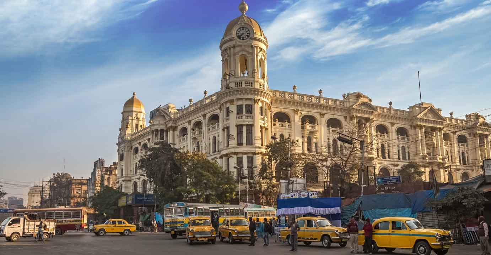

Asia > India > West Bengal > Kolkata District > Kolkata (Calcutta)
ABOUT KOLKATA
This former British colonial stronghold boasts evidence
of over two millennia of habitation, with ornate,
architecturally diverse buildings, ranging from
crumbing ruins to Victorian treasures. Home to lively
festivals and a vibrant artistic community, clamorous
markets and packed temples, this city is crowded and
polluted, but ultimately invigorating.
ESSENTIALS KOLKATA
~ DO ~
places to see , ways to wander and
signature experience
~ STAY ~
a mixture of the charming , modern and
tried and true

~ EAT ~
can't miss spots to dine , drink
and feast